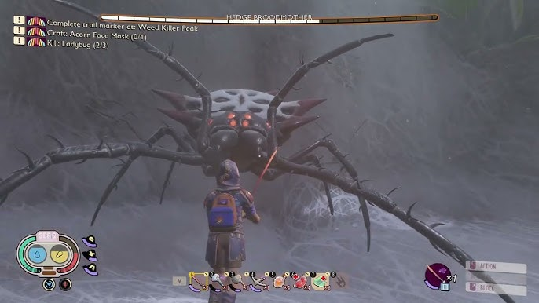
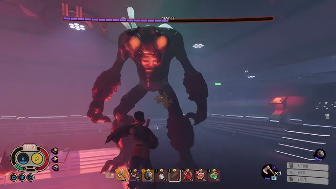
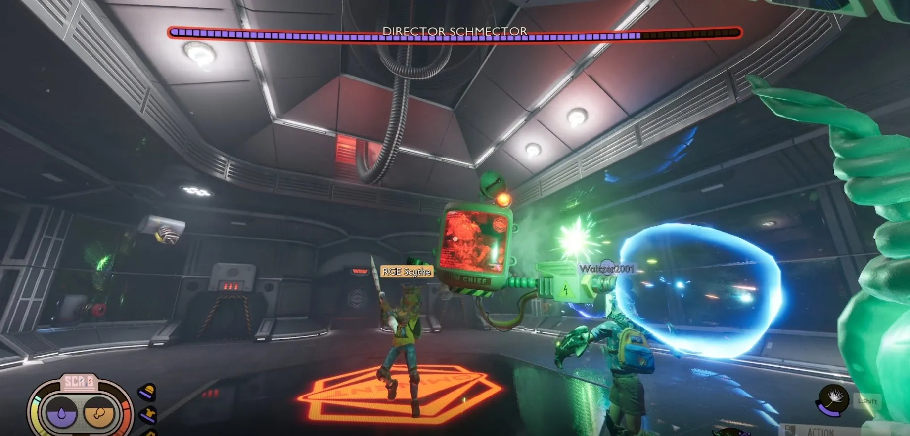

Home
building
killing bugs
crafting
Friends
survival
researching items
fighting bosses are sometimes hard to beat. i'm going to show you what the bosses look like
we have the Broodmother

she has
Health 2450
Defense 20
Damage Resist
Phase 1: 25% Phase 2: 50% Phase 3: 70%
then have the green shield bug
 Health 500
Defense 8
Damage Resist 25%
Health 500
Defense 8
Damage Resist 25%
then we have the Assistant Manager

then we have the praying mantis
 Health 3400
Defense 25
Damage Resist
Phase 1: 25% Phase 2: 50% Phase 3: 70%
Health 3400
Defense 25
Damage Resist
Phase 1: 25% Phase 2: 50% Phase 3: 70%
we got more we have the mant

Health 3200
Defense 20
Damage Resist Phase 1: 25% Phase 2: 50% Phase 3: 70%
we have the termite king
 Health 1910
Defense 16
Damage Resist 25%
Health 1910
Defense 16
Damage Resist 25%
we got the black widow this thing is OP and hard to kill it's got no weaknesses and If they happen to kill a Black Widowling, which are the babys the boss/black widow will heal 30 health every second for 10 seconds and their attack speed is increased by 50% for 10 seconds. have funtrying to kill this thing.
 Health
3000
Defense
10
Damage Resist
25%
Health
3000
Defense
10
Damage Resist
25%
we have the wasp queen this boss is annoying
 Health 5000
Defense 10
Damage Resist Phase 1: 25% Phase 2: 62.5% Phase 3: 87.5%
Health 5000
Defense 10
Damage Resist Phase 1: 25% Phase 2: 62.5% Phase 3: 87.5%
we have dr schmector this is the end boss for the game

HP: 4000
the last boss is the infected Broodmother this boss is the top most hardest boss fight in grounded
 Health Phase 1: 2000 Phase 2: 3000 Phase 3: 6000
Defense 10
Damage Resist Phase 1: 62.5% Phase 2: 58.75% Phase 3: 54.625%
Health Phase 1: 2000 Phase 2: 3000 Phase 3: 6000
Defense 10
Damage Resist Phase 1: 62.5% Phase 2: 58.75% Phase 3: 54.625%
lets say you killed it well you didn't it's got 3 lives and if you killed it twice on it's third life it's speed is incressed by 85%
making it hard to parry but if you are very good at parrying this will not be that hard. the only easy thing is that it's weak to fresh
if you beat all of the bosses you can get to the other world but you only need to kill three bosses Broodmother, Mantis, Wasp Queen this is what it looks like when opened

if you go to the new world you keep your stuff but there is a chance that some of the bugs are infused there are 4 new worlds